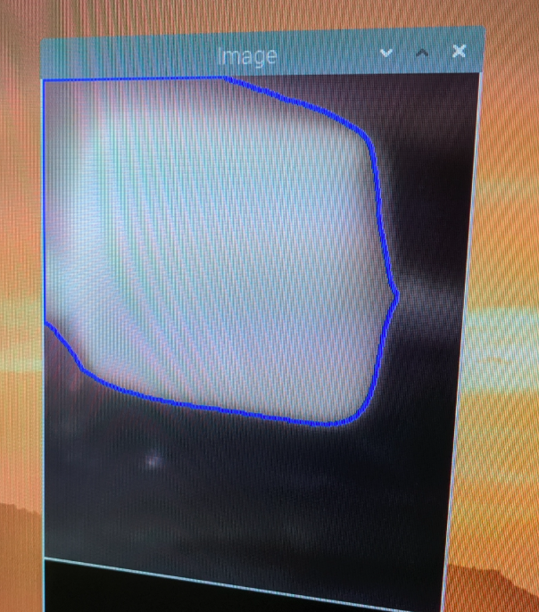
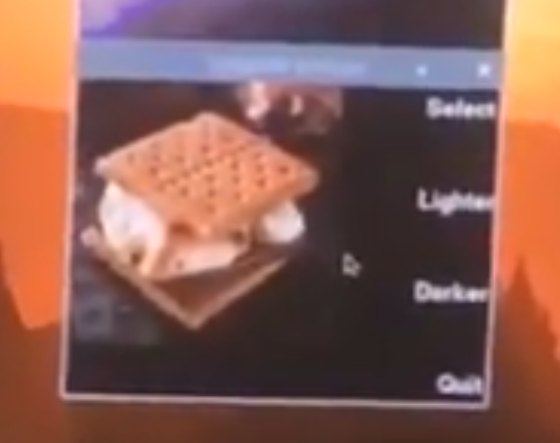
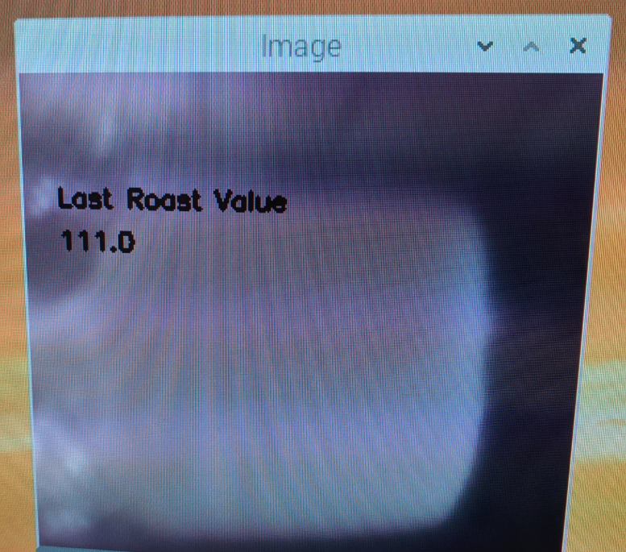

S.M.O.R.E
The Smore Mechanism for Optimal Roasting Experience

The Smore Mechanism for Optimal Roasting Experience

SMORE is the smore mechanism for optimal roasting experience. The project was inspired by the team’s mutual love of camping and the unique challenge of getting a marshmallow toasted to perfection. With SMORE, a user can simply input their desired level of toastiness, and, using robotics and computer vision, SMORE takes care of the rest.
As seen to the right, the high level design of SMORE is quite simple. One motor controls the slow rotation of the mallow in front of the heating element. The camera situated above the marshmallow keeps a close eye on the color, which has been set to a user preference using a TFT button selection. Once the toasting is complete, the heating element turns off, and a claw packed with a graham cracker and, optionally, chocolate, moves forward on a rack and pinion to acquire the marshmallow and return it for the user to remove and consume.

The mechatronic aspects of this project fall into four major categories; the roasting apparatus, the video monitoring, user input, and the S’more Assembly. The components will be contained in an acrylic, laser cut chassis to make it portable and protect the assembly from interference.
The primary hardware aspect of the tool is the marshmallow toasting capability. The heating element was obtained from a toaster generously donated from Joe, which was disassembled to acquire the mica and tungsten heating element from within.


The heating element runs off wall power, which we protected via a 10A 120V relay controlled by the Raspberry Pi. The heating element is elevated from a laser cut acrylic platform using metal standoffs to isolate it from any flammable materials. The marshmallow sits on a two pronged dowel attached to a servo, which slowly rotates the marshmallow to allow it to roast in a controlled fashion.
The toasting of the marshmallows monitored by a Raspberry Pi Cam V2, which is mounted above the roasting apparatus. The Pi Cam is situated in a plastic case to protect it from both the heat and any particles of marshmallow/fiberglass/etc.
In order for the user to give input and receive feedback on how toasted their marshmallow will turn out, there is a selection menu of the PiTFT, using the pre-existing buttons, to select their optimal roastedness level.
The most challenging mechanical aspect of SMORE has been the assembly component. Starting out with the example mechanical claw found at (https://www.youmagine.com/designs/simple-robot-claw), the team modified the designs to account for gripping a larger item and to have automatic actuation via servo.

The gripping arms of the claw had to be able to hold a graham cracker without dropping it on both sides, support chocolate or other optional toppings, and drag the marshmallow off the prong and onto the graham cracker plate. The claw also had to allow a user to easily remove the assembled smore after roasting was complete. In order to accomplish this, the claw was redesigned, as shown below, to have a graham cracker sized crevice to insert and easily remove the components of the smore. The component was 3D printed in the RPL.

The mounting end of the claw was also modified to hold a servo, such that it could be automatically opened and closed on command when the marshmallow was completely toasted. After the claw was designed and operating, the rack and pinion was designed to carry the claw to the marshmallow and remove it from the prong. In order to accomplish this, two mounts were designed to hold the claw up by the servo, which would sit on a sliding panel. The panel would be pushed back and forth by linear teeth interfacing with a gear attached to a stepper motor, which would push the platform back and forth. The claw-panel assembly was kept in place by the rack, which the panel slid back and forth along. The entire rack and pinion holder system was designed to be laser cut out of acrylic for easy prototyping and iterating.

After all the individual components were designed and tested, it was time for integration. Due to extreme temperatures within the chassis from the heating element, we opted to insulate the design with fiberglass, covered in aluminum foil so as not to get fiberglass on any food surfaces. The fiberglass did an excellent job shielding the chassis and the outside from heat.


The servo was mounted on the back of the assembly, and a rack and pinion carrying the claw was situated at the front. The Pi Cam sat snugly at the top of the chassis to look down on the marshmallow below, and the heating element was mounted to the side of the marshmallow.


The software component for SMORE was essential for driving all of the wonderful hardware created. Software development was primarily focused on three phases of operation: pre-toasting, toasting, and retrieval. The pre-toast programs focused around properly detecting and identifying a marshmallow, as well as taking user input for toasting levels. During the toasting phase there was one program to handle monitoring the marshmallow, controlling the heating element, as well as providing some additional safety layers. The final stage of operation, retrieval, was handled by a program that drove several motors to be able to extend the developed claw, close it, and return with the s’more. Further discussion of all programs can be found in the following section. A collection of all programs and other related files can be found here with the Final folder containing the files used in the final demoed version. Other files present in the TestScripts folder are either previous iterations of programs or basic beginning scripts that were worked into the final scripts.
Before beginning the roasting process, it is essential for the user to manually load a marshmallow. Due to potential deviation in the placement and shape of each individual marshmallow, a unique program was written to detect contours in our video feed that could correspond to a marshmallow. The program would then await user confirmation of a contour corresponding to the marshmallow, before passing said contour back for other programs to use. A full discussion of this program can be seen in the pick_countour.py section.
The program written for pick_contour.py began with analysis of the live video feed from the piCamera using the OpenCV python library, cv2. Each frame was first cropped to focus on the segment of marshmallow skewer that could potentially have a marshmallow on it. After the cropping, the image was moved into the analysis stage of the program. Thankfully, a marshmallow begins as a much lighter object than almost all of the surrounding areas in our device (see Results section for further discussion of limitations), and thus we could use thresholding to detect its shape. The thresholding process is quite straightforward with cv2 supported functions as a grayscale version of the frame was made with one function call, and then a threshold applied with another function. These functions were: cvtColor to change to grayscale and threshold to threshold the image.
After thresholding the image, it was then analyzed for contours using the findContours function. Each contour was then run to a user created function that determined if the specific contour was potentially valid for being a marshmallow. The most reliable and simple solution to the problem was to validate a contour based on its perimeter. Since the image had been focused on only the potential marshmallow area, the contour corresponding to it was significantly longer than anything else in the image, and thus gave the correct contour each time tested, once finding an appropriate cutoff level. In order to assure proper alignment in the contour finding stage, as well as for consistency later in measurement, the servo controlling the marshmallow skewer was also set to an initial position before identifying the contour.
Running the process then went through the above steps for an initial runoff time of three seconds before it began to actively search for the marshmallow. The above step was done to allow the camera to adjust to light settings as well as refocus for optimal execution. Once it finished the runoff time, the program allowed the user to select which contour was correct using buttons on the piTFT. To do this, each potential marshmallow contour was stepped through for a given image until one of two conditions happened. If the user selected a contour as corresponding to the marshmallow, then this contour was recorded and the program ended. However, if none of the contours in the frame were selected, then the next frame was loaded and analyzed in the same sequence. In the figure below the displayed frame with a contour can be seen.
After the user had properly identified the marshmallow, they were prompted to select a level of toastiness for the operation of the device. The interface for this selection menu leveraged buttons from the piTFT to cycle through options for the level of darkness desired for the marshmallow. The user_in.py section contains more details about the precise implementation.
The program developed in this stage was partially a reskin of previous programs written throughout the semester of class. The display in its initial stage can be seen in the first figure below, which displays a generic s’more image as well as user options: select - which selects the current level of toastiness displayed as the toast level, lighter - which decreases the level of toastiness by one stage, darker - which increases the level of toastiness by one stage, and quit - which will quit the program and execution of the SMORE software. The above options are tied to the corresponding adjacent button on the piTFT. After cycling to a desired toastiness level (1-10), and selecting the option, a second confirmation page is displayed which asks the user if the level of toastiness is correct, and gives two options, confirm, which confirms the level, or cancel, which deselects and allows the user to change the level to a different value. The second figure below displays this screen. Once the user has confirmed a desired toast level value, the information is recorded and sent back to be used later, and the program ends.
Once all of the setup steps described above had been finished, the software flow of SMORE was to then shift towards handling the toasting and monitoring of the marshmallow. The original goal of the device was to roast the entire circumference of the marshmallow, but after several operational issues (discussed further in the Results section), functionality was limited to analysis and roasting of only one particular side of a marshmallow. In this slightly reduced execution, the main elements were: ensure that a consistent side is aligned for the toasting and measuring phases of operation by using a servo, analyze only the marshmallow contour for toastiness level, determine when the marshmallow has reached the desired toast level, control the heating element, and finally proved some interrupt ability for the user. The entirety of the final functionality is contained in the rt_one_side program which has a detailed discussion below. Several other iterations were also created for the original operational style of complete toasting, and the final working stage is contained in the program read_toast_update on Github.
The first step in development of this program was to be able to average pixel values for a region targeted by a passed in contour. To accomplish this a function was created such that with a single call and passing in a grayscale image, the function would create a mask of the pixels corresponding to the main contour the program received upon startup, and then take the average of all of those pixel values and return that number. Obtaining the grayscale image was done the same as in pick_contour where simple cv2 function calls could capture a video feed from the camera and analyze frame by frame.
Once the averaging of a region was complete, the next step was to control the servo motor such that a consistent area could be analyzed each time as well as placed in optimal position with respect to the heating element. Control for this was simple, as it was decided every 10 seconds during operation, the marshmallow would be rotated from optimal toasting position (+90 degrees) to the best position analysis position (0 degrees), and once the surface analyzed it could be returned back to the toasting position (+90 degrees). To accomplish this a standard servo was used with the corresponding duty cycle generated on a 50 Hz PWM signal to obtain each position.
Once the monitoring and measurement aspects were complete, the next logic was to tackle in which way the toasting process would be determined as complete as well as implementing several features to be able to manually end the toasting process and begin retrieval. To evaluate the toast level of the marshmallow, an initial value is set to determine the base darkness of the marshmallow, and then a target value is calculated subtracting 5*toast_level from the base darkness level, where toast_level is the desired value passed in from the user_in script. Upon reaching the calculated toast value, the rt_one_side script will complete execution. As a safety measure, should the marshmallow be reaching a toastedness that is potentially too close to catching fire, the user can press one of the buttons on the piTFT that will force the toasting program to complete and begin retrieval of the marshmallow. One last note is that for each toast read, an average of five readings is taken to help mitigate any issues from deviations in one frame as to not prematurely trigger a retrieval. The start value is also read after several seconds of operation to allow the camera feed to stabilize after some initial reads.
The final aspect of control is manipulating the heating element. The program is able to turn on the heating element at the beginning of operation by sending a high signal to the relay controlling the heating element, and upon completion of the program the signal is written low to turn off the heating element. During operation a live camera feed is displayed to the user of the marshmallow. The screen also displays the last read toastiness level on the image in the upper left corner. The first figure shows an example of the feed during operation. Additionally, the program prints in the terminal the read starting toast level, the level of toasting to be done (cook level), and the target toast level. A readout of these can be seen in the second figure.
The final stage of execution for SMORE is to physically retrieve the marshmallow after it has completed roasting. The software to support the program was contained in one program, retrieve.py which handled all necessary logic and operations. Further discussion of the program is in the retrieve.py section. The hardware behind the mechanism has been covered in the hardware description above. Thus, the only components of the system that needed to be controlled were the servo that opens and closes the claw mechanism and the stepper motor that drives the rack and pinion to carry the claw to the marshmallow.
The first stage of execution is to ensure that the claw mechanism is open so that it can fit the marshmallow inside the jaws of the claw. To ensure this, the servo controlling the claw is driven counterclockwise for approximately 1.5 seconds. After ensuring the jaws are open, the claw mechanism is driven to the marshmallow via the stepper motor in the rack and pinion system. Stepping full steps at a frequency of 100 Hz for 6 seconds was found to be a satisfactory method for this operation. Following this, the marshmallow is aligned inside the jaws of the claw. Then, the jaws can be closed by driving the servos in the clockwise direction for 1.5 seconds again. Finally, the claw mechanism is retracted by driving the rack and pinion stepper in the opposite direction for 6 seconds by changing the value of the DIR pin on the stepper motor driver. Once these stages have completed, the s’more is free to be removed from the device.
All of the above programs were developed uniquely for their own operation such that the overall software package was modular and able to be brought up quickly rather than having one massive program handling everything. However, after completion of each program development, it was essential to then have all work together sequentially. To accomplish this, a wrapper script was developed, op.py, which is fully covered in the corresponding section below.
In this script, each supporting python program from the above was imported and executed as its own entity. To accomplish this, there was some slight modification to each program such that it could be run via a call to a main function in each. Once this slight change was done, each program could be executed by a simple call to the imported version in the wrapper script. The first program executed was pick_contour.py, and then the returned contour from the program was recorded by setting it equal to a variable in the wrapper script. Following pick_contour was user_in, which then had its final selected toast level recorded in another variable in op.py. When calling rt_one_side, each of the aforementioned saved variables were passed in such that the program knew its desired toast level as well as the target contour. After rt_one_side completed, a five second delay was placed in the wrapper script to ensure enough time for cooldown of the heating element that if it were to graze the claw mechanism, the claw wouldn’t be melted. Following the five second delay, the retrieve program was run to fetch the marshmallow and ultimately build the s’more simultaneously. Following completion of retireve.py, the wrapper script finished and was ended as well.
SMORE was able to demonstrate a large range of functionality especially compared to the original proposed design. However, several issues that became prevalent upon physical implementation caused some changes in functionality as well as prevented SMORE from running in a perfect matter. The Unresolved Issues section will cover all of the issues still present in SMORE that kept it from achieving complete success, and the Improvements section will discuss ways in which these issues could be addressed moving forward. Finally, the Final Function section will detail exactly the operation that was obtained from SMORE on its last run.
Starting with the issue that caused a slight shift in operation of SMORE, the heating element will be discussed. The heating elements from the toaster provided several challenges that couldn’t be overcome. Using the elements that were single wrapped generated so much heat that the marshmallow would begin to burn very quickly after presenting the first signs of toasting,making detection almost impossible. The double sided element was a better option, but was a bit too far to the other extreme. It generated enough heat to melt the marshmallow, but wasn’t very effective at toasting it rapidly, and thus the issue that occurred was the marshmallow would get too melty to rotate on the skewer rather the skewer would rotate inside the marshmallow while it stayed stationary. To overcome this, it was decided to only roast one side of the marshmallow, as well as make a double prong skewer to prolong the effective rotation duration. Overall the single sided operation was more successful, but prevented a full toasting as originally desired. The heating elements also posed a problem to the camera as well. Needing to have the element entirely contained for safety caused the internal of the system to become quite hot, and actually melt a part of the camera such that the display became blurred after long enough operation.
The next issue encountered was some issue in the pick_contour program where the contour found for the marshmallow was not the correct one. The issues stemmed from three different factors: the bottom of the heating chamber was somewhat reflective and would be detected as a part of the marshmallow contour, residue from previous marshmallows along the skewer would read as being a part of the present marshmallow, and the melting of the camera from previous runs would lead to blurred images that further skewed the contour.
The remainder of issues then presented themselves in the rt_one_side portion of software execution. The first issue encountered was that the system would read much smaller initial toast values on the first two reads compared to subsequent reads. The issue was likely due to dynamic lighting settings as the heating element turned on and began glowing as well as the marshmallow expanding in size as it began to toast, and thus became closer to the camera. The other issue that arose during the program function was that the toastiness of the marshmallow could vary rapidly in the final stages of toasting, presenting issues of reaching the desired levels of toastiness while preventing the marshmallow from catching fire.
To resolve the issues with the heating element damaging the camera as well as less than optimally toasting the marshmallow, one major improvement would be to find a more directive heating source such that it could deliver more focused heat to the marshmallow and not the surroundings (i.e. the camera). The more directed heat would also allow for better toasting before the marshmallow began to melt and resist rotation.
The issues encountered in the pick_contour script could be resolved by finding a better contrasting coating for the bottom of the heating chamber rather than just spray painting it, as well as echoed from the above of changing heating elements to prevent melting the camera and the resulting blur. Additional improvements could be using a dedicated light source to improve the lighting inside the chamber to also handle issues with the piCamera and dynamic lighting situations.
The base issue of the erroneous first two reads during toasting operation was partially solved by waiting to set the start toast level until after those two reads, but the exact origin of the issue couldn’t be found to be resolved (whether it was lighting or something else). To better handle the quick changes in toastiness found in the program, more frequent observation would be ideal. However, constantly removing the marshmallow from the heat source slows the overall rate of toasting, and thus extends operation. Extended operation then serves to heat the camera even further, damaging the imaging system worse and making it less reliable. Therefore, a full system redesign would also be necessary to handle longer heating times while which could then support more frequent observation.
The final function of the SMORE system was to adequately detect a marshmallow, take user input for a desired toastiness level, attempt to roast the marshmallow to a given darkness level, and finally retrieve the marshmallow from the heating chamber and successfully assemble a s’more. As previously mentioned in the Unresolved Issues section, the marshmallow detection was semi-flawed. The roasting program also had several other factors as discussed above that prevented it from working fully, and thus the termination of the program often needed to be forced by user input. A video of operation can be seen earlier in this report.

| Component | Cost | Link |
|---|---|---|
| Pi Cam | $25 | Pi Cam |
| Toaster | Free! (Junk) | |
| Stepper Motor | $10 | Stepper Motor |
| 2X Servo | $16 | Servos |
| Motor Driver | $5 | Motor Driver |
| Pi | Provided | |
| Acrylic/Filament | Provided | |
| TFT | Provided | |
| M3 Hardware | Provided | |
| Resistors/Wires | Provided | |
| Total | $56 |